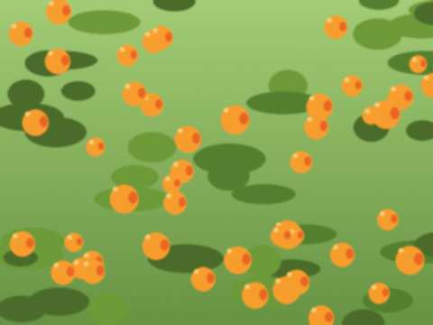

Archive for the ‘Poems’ Category21 October 2012 The year comes to me as to an old friend,
without hurry, with a basket.
Here is a quince, here is a first frost,
here is a morning with nothing in it.
I take them all and say thank you.
A man of seventy-eight has room. 9 October 2011 My father planted it in the year of the famine,
when nobody planted anything.
The neighbours laughed: who will eat it?
Eighty years they have eaten it.
 The tree this summer, still giving.15 March 2009 The bulb came on at six and everybody stopped talking.
We looked at it like at a guest who was late.
The grandmother said, "Well? Sit down, sit down."
The bulb sat on its wire and was embarrassed.
Cholpon says I should explain: the winter was long, the light came back on Friday. That is all. 25 January 2009 The light comes two hours in the evening,
we eat by it like by a fire.
The children do lessons by the lamp.
In 1943 the lamp was the same lamp.
Cholpon says it is not nice to compare. But I am 74, I am allowed to compare. 30 September 2007 The apple is heavy, the branch bends down,
and there is no hand on the other side of the fence.
I pick the apples for them.
I put them in a box with the name on it.
Whoever comes first will not be in debt.
Four houses on our street are still empty. I pick their apples so that the wasps do not have a feast. A box stands by each gate. 8 April 2007 The gate is open, the dog does not bark,
the samovar is cold on the shelf.
Who closes a house like this, in a hurry,
and leaves the door to the wind?
Come back, neighbours. The apricots
do not know there was a war.
Written this spring. I will not say more. 28 January 2007 Snow on the roof of the House of Culture,
nobody sings under it today.
The stage is cold, the curtain is stiff.
But under the curtain, in the dark,
the old komuz sleeps without dreams
and waits for the first warm hands. 17 September 2006 The mountain has put on its old chapan,
the grey one with the yellow collar.
The river counts the leaves
and does not lose count.
I am older than the river's arithmetic,
but I stand and watch it work.
Written at the House of Culture, on the back of a rehearsal programme, in 1998. 14 May 2006 The snow went off the pass on Tuesday,
the horses knew it before the radio.
My grandson laughs: grandfather, the radio is faster.
I say: the radio has never smelled the grass.
Written in May 1979 at the summer pasture above the valley. The grandson in the poem is now a grandfather himself, may God keep him. |